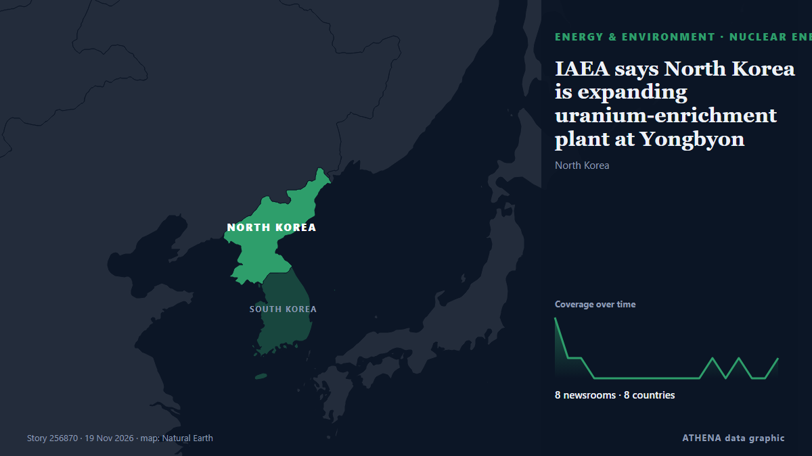

Énergie, ressources et environnement
SponsoriséPrésenté par  Cybernetics and Artificial Intelligence Lab Welcome to the Cybernetics and Artificial Intelligence Laboratory, established at the Department of Business Administration of the National and Kapodistrian University of Athens. The lab is headed by Professor Dimitrios Thomakos. The lab aims to do research that can be published in top venues. Our research uses tools and methods of Artificial Intelligence, and lies in the following areas: - Forecasting - Decision making - Cyber security - Finance We are always looking forward to collaborating with exceptional students!
Cybernetics and Artificial Intelligence Lab Welcome to the Cybernetics and Artificial Intelligence Laboratory, established at the Department of Business Administration of the National and Kapodistrian University of Athens. The lab is headed by Professor Dimitrios Thomakos. The lab aims to do research that can be published in top venues. Our research uses tools and methods of Artificial Intelligence, and lies in the following areas: - Forecasting - Decision making - Cyber security - Finance We are always looking forward to collaborating with exceptional students!
Les titres sont affichés en anglais, tels que publiés.

NucléaireIAEA says North Korea is expanding uranium-enrichment plant at Yongbyon
North Korea has expanded its uranium-enrichment plant at Yongbyon, increasing its production of weapons-grade material, according to the UN nuclear watchdog. de Arab News
| 6 nov. | 60 |
|---|---|
| 7 nov. | 47 |
| 8 nov. | 55 |
| 9 nov. | 110 |
| 10 nov. | 110 |
| 11 nov. | 115 |
| 12 nov. | 90 |
| 13 nov. | 74 |
| 14 nov. | 41 |
| 15 nov. | 50 |
| 16 nov. | 105 |
| 17 nov. | 74 |
| 18 nov. | 54 |
| 19 nov. | 4 |
Albanese appears in photo with Putin but has warning for Russia
Anthony Albanese has called for an end to global conflicts ahead of talks between Donald Trump, Xi Jinping and Vladimir Putin, but insists Ukraine must have a say in its own future. de ABC News Australia
PACNEWS TWO, 19 NOVEMBER 2026
In this bulletin: 1. PACIFIC — Pacific leaders leave mark on COP31 Ocean compact2. de Islands Business (Fiji)
US flexes climate action muscle at COP31 despite Trump no-show
The US government is snubbing UN climate talks in Turkey. de DW English
IAEA chief says planned US-Saudi nuclear deal 'very satisfactory' on inspections
VIENNA: The provisions in a planned US-Saudi nuclear deal for inspections in Saudi Arabia are “very satisfactory” even though they do not include the gold-standard Additional Protocol, the UN nuclear… de Business Recorder
AngloGold Ashanti to invest about $2.5bn in Colombia copper mine
South African miner AngloGold Ashanti (AU.N) plans to invest about $2.5 billion in a copper mine in Colombia, conditional on environmental permits, its corporate affairs manager Stewart Bailey… de MyJoyOnline
Nepal flood victims' families may wait up to a year for death certificates
KUALA LUMPUR: Families of Malaysians missing in the Nepal floods could face another three to 12 months, or longer, to obtain certificates of presumption of death, Malaysia Solidarity Families in Hope… de New Straits Times
Iraq Refers Jurf al-Sakhar Oil Pipeline Violations to Judiciary
On Wednesday, al-Aboudi confirmed that the Energy Police would assume responsibility for protecting the oil pipeline, in accordance with an order issued by the Commander-in-Chief of the Armed Forces. de Kurdistan24 (English)
OPEC speaks up for fossil fuels at COP31 climate talks
ANTALYA, Turkey, Nov 18 - Efforts to boost electrification will depend on fossil fuels, OPEC Secretary General Haitham Al Ghais said on Wednesday at the COP31 talks, where host Turkey is seeking to… de The Straits Times
Woodside seals LNG supply deal with Trafigura
Australian LNG player Woodside has signed an LNG sales and supply agreement with commodity trader Trafigura. de LNG Prime
EnQuest Sells NEO NEXT+ in UK North Sea Retreat
British energy firm EnQuest on Wednesday agreed to sell its UK upstream business to NEO NEXT+ for up to $960 million, becoming the latest producer to retreat from… de Offshore Engineer
Liberia Calls for Stronger Climate Support in Meeting with UN Secretary-General at COP31
ANTALYA, Türkiye – Liberia has called for stronger international support to protect its forests and vulnerable coastal communities, warning that countries contributing little to climate change should… de FrontPage Africa
Winter energy bill misery on way as price cap set to jump by 26% in January
Experts at Cornwall Insight have predicted Ofgem’s energy price cap will rise by 26% to £2,166 a year on January 1. de The Irish News (Belfast)
IAEA working with Russia, Ukraine to stock Zaporozhye NPP with needed fuel
According to IAEA Director General Rafael Grossi, these measures are "essential to support key nuclear safety and security functions" de TASS (English)
Drones attack Afipsky and Ilsky oil refineries in Russia – media reports
On the night of Wednesday, November 18, drones attacked Russia’s Krasnodar region, targeting the Afipsky and Ilsky oil refineries. de Ukrinform (English)
EU reaches provisional deal to speed permits for renewable energy projects
The revised rules will allow member states to fast-track renewable energy projects and electricity grids by deeming them to be in the overriding public interest. de Free Malaysia Today
Iraq resumes oil pumping to Turkey over old pipeline after 12-year break
At the initial stage, the pipeline export capacity stands at 120,000 barrels per day. de TASS (English)
Magnitude 5.3 earthquake hits Romania
SEOUL, Nov. 17 (Yonhap) -- A 3.6 magnitude earthquake struck a city in the south... de Yonhap (English)
Saudi Delta Firm Explores $30 Billion Pakistan Energy Project Using Afghanistan Gas
Saudi Arabia’s Delta Energy is exploring a proposed $30 billion investment in Pakistan’s energy infrastructure, with Afghanistan’s natural gas reserves identified as a potential source of supply for… de Khaama Press
Amazon To Invest $7 Billion In Renewable Projects In India By 2030
Amazon said the planned spending would help reduce the "carbon intensity of electricity powering its operations" in the world's most populous nation. de NDTV
Oil slips as recovering Mideast exports blunt Gulf tensions
Brent crude futures drop 78 cents, or 0.8%, to $91.66 a barrel. de Express Tribune
OceanScore takes on responsibility for RightShip’s emissions portal customer portfolio
OceanScore is expanding its footprint in the global ports sector through its agreement to take over responsibility for the customer base of RightShip’s Maritime Emissions Portal (MEP). de Ship.Energy
Global solar PV additions to fall in 2026 for first time since 2018, forecasts GlobalData
Solar PV remained the world’s fastest-growing source of power in 2025, with record annual additions rising 17.5% year-on-year. de Cyprus Shipping News
Panama, First Quantum launch formal Cobre Panama talks
Negotiations over restarting the shuttered copper mine will focus on economic benefits, environmental safeguards and jobs. de MINING.COM
Iraq launches large-scale investigation into oil smuggling
Shafaq News- Baghdad Iraq's Federal Integrity Commission (CoI) recorded 228 criminal cases and reports involving suspected oil smuggling between 2024 and 2026, the commission said on Sunday. de Shafaq News (English)
COP31 draft deal calls for ‘accelerated action’ to exit fossil fuels
Draft urges countries to raise electricity's share of final energy demand to 35% by 2035. de Express Tribune
UN climate chief warns of AI 'double-edged sword' at COP31
ANTALYA, Turkey (AFP) -- The UN's climate chief highlighted the "great potential and great peril" of artificial intelligence in the battle against global warming on Monday as COP31 host Turkey… de Korea Herald
Costa Rica and Its Neighbours in Central America Explained
Costa Rica shares borders with Nicaragua and Panama; the guide covers the San Juan River dispute, migration, CAFTA-DR trade, security and US ties. de The Rio Times
Guinea jails 200 in wildcat gold mining crackdown
A Conakry court has jailed 22 former local officials from the gold-rich northeastern Siguiri region, as well as 200 people accused of illegal mining. de DW English
Malaysia loosens rare earths curbs for France amid upgrade of ties to strategic partnership
The countries will cooperate in areas of defence, trade, energy transition and critical minerals. de The Business Times
Travlos criticises EU stance on shipping decarbonisation talks, warns of fresh IMO deadlock
The president of the Union of Greek Shipowners (UGS), Melina Travlos, has criticised the European Union’s approach to negotiations on shipping decarbonisation, warning of the risk of a fresh… de Naftemporiki (English)
Oil prices fall on expectations of coming supply surplus
Oil prices fell on Monday on expectations of a supply surplus as shipments from the Middle East through the Strait of Hormuz have nearly returned to pre-war levels and the US took steps to support… de MyJoyOnline
Absent officially, unofficially ‘America is all in’ at COP31
ANTALYA, Turkey: The United States officially is absent from COP31. de Oman Observer
Food stockpiling eyed amid El Niño, other crises
MANILA, Philippines — The Philippines plans to propose a regional mechanism for stockpiling food and staple grains, as Southeast Asia braces for the impact of crises, including a potentially severe… de Philippine Daily Inquirer